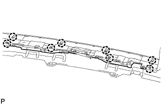
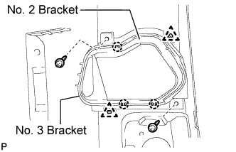

REAR BUMPER (for Standard) > DISASSEMBLY |
| 1. REMOVE NO. 2 FRAME WIRE |
w/ TOYOTA Parking Assist-sensor System, w/ Rear Fog Light:
Remove the No. 2 frame wire.
Disconnect the 6 connectors.
Detach the 16 clamps and remove the frame wire.

w/ TOYOTA Parking Assist-sensor System, w/o Rear Fog Light:
Remove the No. 2 frame wire.
Disconnect the 4 connectors.
Detach the 14 clamps and remove the frame wire.

w/o TOYOTA Parking Assist-sensor System, w/ Rear Fog Light:
Remove the No. 2 frame wire.
Disconnect the 2 connectors.
Detach the 13 clamps and remove the frame wire.

| 2. REMOVE NO. 2 ULTRASONIC SENSOR (w/ TOYOTA Parking Assist-sensor System) |
 |
While pushing down on the lever with a finger to release the one claw, detach the claw on the other side to remove the ultrasonic sensor.
| 3. REMOVE NO. 3 ULTRASONIC SENSOR (w/ TOYOTA Parking Assist-sensor System) |
 |
Detach the claw and remove the ultrasonic sensor as shown in the illustration.
| 4. REMOVE NO. 2 ULTRASONIC SENSOR RETAINER (w/ TOYOTA Parking Assist-sensor System) |
 |
Detach the 2 claws and remove the ultrasonic sensor retainer from the rear bumper cover.
| 5. REMOVE NO. 3 ULTRASONIC SENSOR RETAINER (w/ TOYOTA Parking Assist-sensor System) |
 |
Detach the claw and remove the ultrasonic sensor retainer from the rear bumper cover.
| 6. REMOVE REAR BUMPER ENERGY ABSORBER |
 |
Detach the 8 claws and remove the energy absorber.
| 7. REMOVE REAR FOG LIGHT ASSEMBLY LH |
 |
Remove the 2 nuts.
Detach the claw and remove the fog light.
| 8. REMOVE REAR FOG LIGHT ASSEMBLY RH |
| 9. REMOVE NO. 2 REAR BUMPER SIDE BRACKET (w/ Tire Carrier) |
 |
Remove the 2 screws.
Detach the 3 claws and 2 clips, and remove the No. 2 and No. 3 brackets.